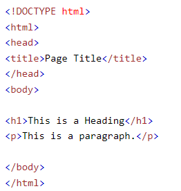

Em 1944 surgiu o Mark I [Harvard], que era um computador criado para produzir geração de cálculos complexos.
Era um computador constituído por válvulas que esquentavam muito.
Em 1946 foi criado o Colossus para cálculos e cripto-análises. Foi utiilizaado pela Alemanha para cálculos na segunda guerra mundial.
Em 1946 o ENIAC foi criado nos EUA. Era um comoutador mais automático e não tanto eletromecânico. Nessa época surgiu também o termo bug, pois, como os computadores esquentavam muito e atraim muitos insetos, eles danificavam os computadores e então dizia-se que deu "bug".
A Segunda Geração de coputadores, foi de 1959 à 1965. Nesta época houve o surgimento dos transistores e a diminuição do tamanho dos computadores
Na terceira geração, 1695 à 1970, houve o surgimento do circuito integrado. Surgiram também os microprocessadores e os computadores pessoais. A Apple lançou o mouse nesta época e ajudou a popularizar os PCs (Personal Computers).
A quarta geração começou em 1971 e pertua até os dias de hoje.
E há quem diga que já estamos vivendo a Quinta geração com o surgimento das Criptomoedas, Meta-verso, AI e Computadores quânticos. Mas tambpem há quem diga que ainda não chegamos lá.
voltarUm dos primeiros sistemas de counicação foi o telégrafo. Em 1958 foi traçado um cabo de um continente a outro possibilitando a comunicação intercontinental. Em 1950, na época da guerra fria, começou a corrida espacial entre Estados Unidos e União Soviética. O ENIAC era usado para cálculos de lançamento de misseis. Nessa época surgiu a ARPA que depois virou DARPA (Agencia de defesa e pesquisas avançadas).
Joseph Carl Robnett Licklider, que plantou a ideia de comunicação mundial
Então, depois de anos surgiu a Arpanet - sistema de comunicação de pacotes, que teve sua primeira conexão foi estabelecida e quebrada em, 29/10/1969, entre a Universidade da Califórnia e o Instituto de pesquisa de Stanford, envindo a palavra login, porém, recebendo apenas lo.Depois de um tempo de evolução da Arpanet, Vinton Cerf e Robert Kahn, criaram o protocolo TCP/IP. E a partir daí foram surgindo novas redes. A Arpanet era usada apenas para fins de pesquisa e miliares.
Em 1989 Tim Berners-Lee baseado no TCP/IP, criou a WWW (World Wide Web) a comunicação baseada em hipertextto HMTL. O Primeiro navegador foi o World Wide Web, depois veio o Mosaic em seguida o Netscape.Grace Murray Hopper, primeira mulher da marinha americana a programar o Mark I em 1944, criou a linguagem de programação de alto nível Flow-Matic
Joseph Carl Robnett Licklider que plantou a ideia de comunicação entre 2 pontos distintos através da computação
Rort Kahn, foi quem apresentou em público a primeira vez o e-mail
Tim Berners-Lee, foi o invertor do WWW baseado no TCP/IP. Popularizou o http e o HTML
Marc Andreesen, reinventou o navegador de internet - O Netscape Navigator. Tornou a nevegação mais amigável com recursos gráficos. Deteve 90% da Internet na época, mas, foi superado pelo Inernet Explorer anos depois
Bill Gates, fundador da Microsoft que criou o IE. Tornou-se acessível a todos os computadores
Steve Jobs, foi o fundador da Apple. Popularizou os smartphones lançando o iPhone em 2007
Cliente é quando você consome informação. São os dispositivos que consomem informação da www. A solicitação vai para o servidor e o servidor de retorna os arquivos estáticos (HTML, CSS e Javascript, Imagens...) dependendo da velocidade da conexão do usuário. O Browser armazena os arquivos em caches na máquina cliente. Os navegadores podem apresentar um coportamento diferente para o mesmo site mesmo tendo sido criados sobre uma padrão.
voltarNavegadroes são programas gratuitos para abrir e executar arquivos É uma preocupação para quem vai programar para o lado do cliente É uma ferramenta de navegação para internet Seguem o padrão W3C No site W3Schools existe uma tabela que mostra quais as tags suportadas por todos os navegadores
voltarSão soluções criadas que possuem a internet como meio de comunicação e não precisam ser instalados nos dispositivos para ser utilizados. Roda em um browser. Aplicações instaláveis e Aplicações Web são mundos diferentes possuem preocupações diferentes na hora de programar
voltarNotebooks Smartphones SmartWatches Tablets Entre 10 latino americanos 9 possuem dispositivo móvel O consumo de internet hoje é massivamente feito pela internet Deve-se procupar muito com a responsivdade
voltarPodem ser locais ou web Tende a ser um computador mais robusto, pois, recebem muitas requisições Podem ser servidores de arquivos, segurança, Streaming, E-mail, Web Datacenters - conjunto de servidores
voltarSistemas operacionais para servidores: Windows Server, Ubuntu, CetOs (Sistemas Unix) Servidores web (Programa específico instalado no sistema operacional server que vão executar requisições http)
voltarProxy - serve a conexão de internet para uma rede sob algumas regras, Firewall - Barreira de segurança para acessos externos Web- E-mail Databese Server
voltarColocar seus arquivos do site em um servidor que ficam disponíveis para acesso através da internet. https - informação criptografada de ponta a ponta. Você pode tranferir os arquivos do seu site que está no seu ocmputador para o servidor usando FileZilla.
voltarLinguagem escrita e formal que esppecifica um conjunto de regras e instruções para gerar programas (softwares). Ela é uma ferramenta para você resolver um problema. 5 primeiras mais populares segundo RedMonk Javascript Python Java PHP C#
Exemplos: PHP, Ruby, C#, JS, Java Procure saber se a comunidade da linguagem é engajada para aprender e tirar dúvidas Coloque a mão na massa ou tente ensinar alguém.
NodeJS que roda Javascript no V8 (módulo opensource dentro do navegador que interpreta e executa Javascript) Node é um programa com módulo V8 que roda Javascript no servidor
voltar"Nome do arquivo da pagina principal por convêção sempre será index.html.
Segue abaixo o bloco da estrutura básica de uma página HTML
Resumo tirado das vídoes aulas do Curso Introdução a HTML do Prof. Diogo Mainardes